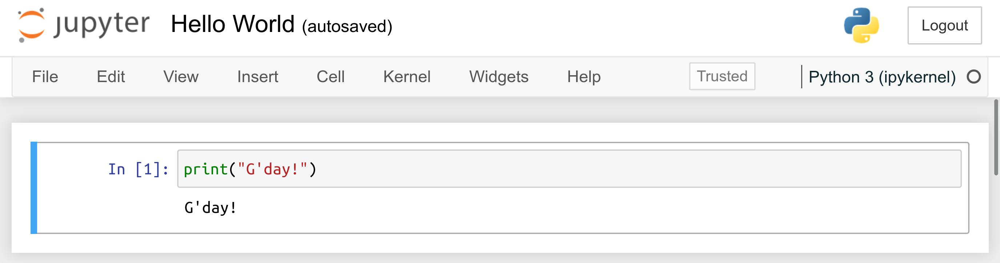

1. Getting Started with Python and JupyterLab¶
1.1. Installing Python¶
We will be using the reference implementation of the Python language (called CPython). Python 3.8 (not: 2.x!) or later will be required.
A convenient way to start with Python is by installing a data science-oriented distribution called Anaconda, which features the language interpreter, the conda package manager, as well as a number of pre-installed packages (including numpy, scipy, pandas, matplotlib, seaborn, and jupyter, etc.).
Exercise. Download and install the latest version of Anaconda Individual Edition from https://www.anaconda.com/products/individual. If you run into any troubles, consult the official product documentation available at https://docs.anaconda.com/anaconda/install/.
Side note. Slightly more advanced users of Unix-like operating systems (GNU/Linux, FreeBSD, etc.), just like yours truly, might prefer downloading Python via their native package manager (e.g.,
sudo apt install python3in Debian and Ubuntu). Then, installing additional Python packages can either be done by the said manager or directly from the Python Package Index (PyPI) via thepiptool.Note that GNU/Linux is the language of choice of machine learning engineers and data scientists both on the desktop and in the cloud. Switching to a free system at some point cannot be recommended highly enough.
1.2. What is JupyterLab?¶
JupyterLab is a web-based development environment supporting numerous programming languages, including of course Python.

In JupyterLab, we can work with:
Jupyter notebooks –
.ipynbdocuments combining code, text, plots, and other rich outputs; importantly, code chunks can be created, modified, and run interactively; the results together with discussion in textual form can be embedded inside the documents, which makes it a good reporting tool for our data science needs;code consoles – terminals for running code chunks interactively (read-eval-print loop);
source files for many different languages – with syntax highlighting and the ability to send code to the associated consoles;
and many more.
It is the definitely not most convenient environment for doing real data science in Python (writing standalone scripts is the preferred option), but we have chosen it here because of its educative advantages (interactive, easy to start with, etc.).
Exercise. Head to the official documentation of the JupyterLab project located at https://jupyterlab.readthedocs.io/en/stable/index.html and watch the introductory video linked in the Overview section.
(**) Note. If you are a more advanced student, you can consider jupytext as a means to create
.ipynbfiles directly from Markdown files.
1.3. Launching JupyterLab¶
How we launch JupyterLab will vary from system to system and everyone needs to determine what is the best way to do it by themselves.
Users of the Anaconda distribution should be able to start JupyterLab via the Anaconda Navigator, which can be accessed through the Start menu/application launcher. Read more in the official manual.
Alternatively, open the Anaconda Prompt (Windows) or start the ordinary system terminal (bash, zsh, etc.) and type:
cd your/favourite/directory # change directory jupyter lab # or jupyter-lab, depending on the system
This should launch the JupyterLab server and open the corresponding web app in your default web browser.
Note. Some commercial cloud-hosted instances or forks of the open source JupyterLab project are available on the market, but we endorse none of them (even though some of them are provided gratis, there are always strings attached). It is best to run our applications locally, where we are free to be in full control over the software environment.
1.4. First Jupyter/IPython Notebook¶
From JupyterLab, create a new notebook running a Python 3 kernel (for example, by selecting File → New → Notebook in the web app menu).
Select File → Rename Notebook and change the filename to
HelloWorld.ipynb.Important. The file is stored relative to the current working directory of the running JupyterLab server instance. Make sure you are able to locate
HelloWorld.ipynbon your disk using your favourite file explorer (by the way,.ipynbis just a JSON file which can also be edited using an ordinary text editor).Input the following in the code cell:
print("G'day!")
Press
Ctrl+Enter(orCmd+Returnon macOS) to execute the code cell and display the result.

1.5. More Cells¶
By pressing
Enter, we can enter the Edit mode. Modify the cell’s contents so that it now reads:# My first code cell (this is a comment) print("G'day!") # prints a message (this is a comment too) print(2+5) # prints a number
Press
Ctrl+Enterto execute the code and replace the results with the new ones.Change
print(2+5)toPRINT(2+5). Also, enter a command to print some other message that is to your liking. Note that character strings in Python must be enclosed in either double quotes or apostrophes.Press
Shift+Enter. This will not only execute the code cell, but also create a new one below and enter the edit mode.In the new cell, enter and then execute the following:
import matplotlib.pyplot as plt # basic plotting library plt.bar( ["Python", "JavaScript", "HTML", "CSS"], # a list of strings [80, 30, 10, 15] # a list of integers (the corresponding bar heights) ) plt.title("What makes you happy?") plt.show()
Add 3 more code cells, displaying some text or creating other bar plots.
Note. In the Edit mode, JupyterLab behaves like an ordinary text editor. Keyboard shortcuts probably known from elsewhere are available, for example:
Shift+→/↓/↑/←– select text,
Ctrl+c– copy,
Ctrl+x– cut,
Ctrl+v– paste,
Ctrl+z– undo,
Ctrl+]– indent,
Ctrl+[– dedent,
Ctrl+/– toggle comment.
1.6. Edit vs Command Mode¶
By pressing
ESC, we can enter the Command mode.Important. We will be using
ESCandEnterto switch between the Command and Edit modes, respectively.In the Command mode, we can use the arrow
↓and↑keys to move between the code cells.In the Command mode pressing
d,d(dfollowed by anotherd) deletes the currently selected cell.Press
zto undo the last operation.Press
aandbto insert a new blank cell above and below the current one, respectively.Note that cells can be moved by a simple drag and drop with your mouse.
1.7. Markdown Cells¶
So far, we have been playing with Code cells.
We can turn the current cell to become a Markdown
cell by pressing m in the Command mode.
Note that by pressing y we can turn it back to a Code cell.
Markdown is a lightweight, human-readable markup language widely used for formatting text documents.
Enter the following into a new Markdown cell:
# Section ## Subsection This ~~was~~ *is* **really** nice. * one * two 1. aaa 2. bbbb * three ```python # some code to display (but not execute) 2+2 ``` 
Press
Ctrl+Enterto display the formatted text.Note that the Markdown can be modified by entering the Edit mode as usual (
Enterkey).
Exercise. Read the official introduction to the Markdown syntax located at https://daringfireball.net/projects/markdown/syntax.
Exercise. Follow the interactive tutorial at https://commonmark.org/help/tutorial/.
Exercise. Apply what you have learned by making the current Jupyter notebook more readable. Add a header at the beginning of the report featuring your name and email address. Before and after each code cell, explain (in your own words) what we are about to do and how to interpret the obtained results.
1.8. Further Reading¶
Markdown is one of many markup languages. Other learn-worthy ones include LaTeX (especially for beautiful typesetting of maths, print-ready articles and books, e.g., PDF) and HTML (for the Web).
Jupyter Notebooks can be converted to different formats
using the jupyter-nbconvert command line tool.
More generally, Pandoc is a generic converter between different formats, e.g., it can be used to convert between the highly universal (although primitive) Markdown and the said LaTeX and HTML. Also, it can be used for preparing presentations.
1.9. Questions¶
What is the difference between the Edit and the Command Mode in Jupyter?
What is Markdown?
How to format a table in Markdown?